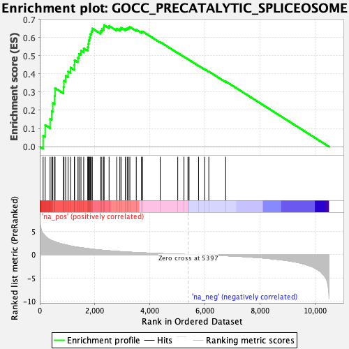
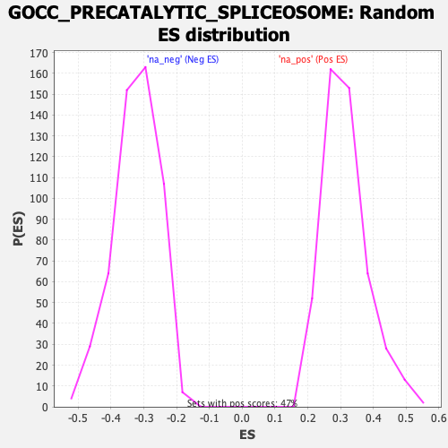

| Dataset | qlf.KOd4vsWTd4_gsea_score |
| Phenotype | NoPhenotypeAvailable |
| Upregulated in class | na_pos |
| GeneSet | GOCC_PRECATALYTIC_SPLICEOSOME |
| Enrichment Score (ES) | 0.66810495 |
| Normalized Enrichment Score (NES) | 2.129674 |
| Nominal p-value | 0.0 |
| FDR q-value | 2.6346417E-5 |
| FWER p-Value | 0.002 |

| SYMBOL | RANK IN GENE LIST | RANK METRIC SCORE | RUNNING ES | CORE ENRICHMENT | |
|---|---|---|---|---|---|
| 1 | MAGOHB | 121 | 4.447 | 0.0610 | Yes |
| 2 | SNRPD3 | 196 | 3.959 | 0.1185 | Yes |
| 3 | PRPF31 | 375 | 3.168 | 0.1532 | Yes |
| 4 | TXNL4A | 436 | 2.968 | 0.1958 | Yes |
| 5 | LSM2 | 473 | 2.901 | 0.2397 | Yes |
| 6 | LSM3 | 539 | 2.777 | 0.2788 | Yes |
| 7 | LSM7 | 555 | 2.735 | 0.3220 | Yes |
| 8 | SNRPD1 | 861 | 2.183 | 0.3284 | Yes |
| 9 | SNRPA1 | 878 | 2.159 | 0.3621 | Yes |
| 10 | PHF5A | 940 | 2.073 | 0.3901 | Yes |
| 11 | SNRPD2 | 1029 | 1.943 | 0.4134 | Yes |
| 12 | SF3A3 | 1118 | 1.817 | 0.4346 | Yes |
| 13 | CWC27 | 1256 | 1.671 | 0.4488 | Yes |
| 14 | LSM8 | 1264 | 1.662 | 0.4752 | Yes |
| 15 | SF3B3 | 1388 | 1.554 | 0.4888 | Yes |
| 16 | SNRPE | 1427 | 1.516 | 0.5099 | Yes |
| 17 | PRPF3 | 1497 | 1.456 | 0.5271 | Yes |
| 18 | SNRPG | 1596 | 1.375 | 0.5401 | Yes |
| 19 | SNRPB | 1742 | 1.268 | 0.5470 | Yes |
| 20 | LSM6 | 1765 | 1.254 | 0.5653 | Yes |
| 21 | PRPF8 | 1781 | 1.244 | 0.5842 | Yes |
| 22 | SF3B5 | 1809 | 1.214 | 0.6014 | Yes |
| 23 | SF3A1 | 1838 | 1.194 | 0.6182 | Yes |
| 24 | SNRPB2 | 1879 | 1.168 | 0.6334 | Yes |
| 25 | SF3B4 | 1909 | 1.144 | 0.6493 | Yes |
| 26 | SMU1 | 2213 | 0.947 | 0.6358 | Yes |
| 27 | BUD13 | 2254 | 0.923 | 0.6470 | Yes |
| 28 | EFTUD2 | 2325 | 0.883 | 0.6547 | Yes |
| 29 | PRPF38B | 2336 | 0.878 | 0.6681 | Yes |
| 30 | SF3A2 | 2518 | 0.792 | 0.6637 | No |
| 31 | CWC22 | 2796 | 0.674 | 0.6482 | No |
| 32 | RBMX2 | 2910 | 0.624 | 0.6476 | No |
| 33 | SNRNP200 | 2953 | 0.613 | 0.6536 | No |
| 34 | SF3B6 | 3107 | 0.559 | 0.6481 | No |
| 35 | SRRM2 | 3177 | 0.534 | 0.6502 | No |
| 36 | SNRPF | 3217 | 0.519 | 0.6549 | No |
| 37 | PRPF38A | 3273 | 0.500 | 0.6578 | No |
| 38 | PRPF4 | 3506 | 0.427 | 0.6426 | No |
| 39 | SF3B1 | 3694 | 0.371 | 0.6308 | No |
| 40 | LSM5 | 3737 | 0.360 | 0.6327 | No |
| 41 | SF3B2 | 4376 | 0.200 | 0.5749 | No |
| 42 | SNIP1 | 5013 | 0.068 | 0.5152 | No |
| 43 | ZMAT2 | 5239 | 0.029 | 0.4942 | No |
| 44 | WBP4 | 5384 | 0.004 | 0.4805 | No |
| 45 | IK | 5424 | -0.004 | 0.4768 | No |
| 46 | LSM4 | 5769 | -0.060 | 0.4449 | No |
| 47 | PRPF6 | 5989 | -0.096 | 0.4255 | No |
| 48 | SART1 | 6142 | -0.123 | 0.4130 | No |
| 49 | DHX16 | 6757 | -0.263 | 0.3586 | No |
